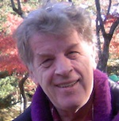
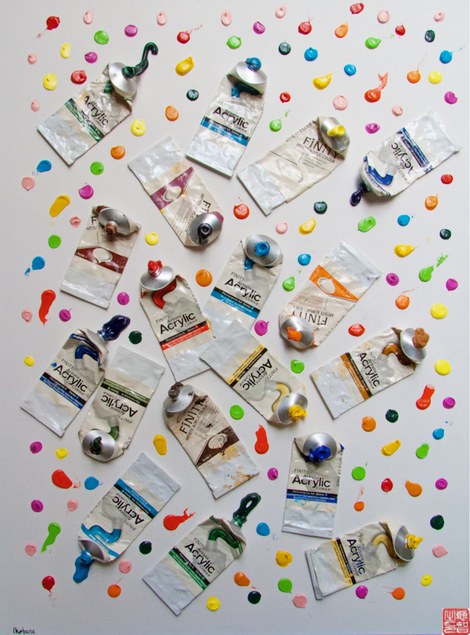
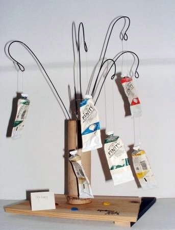
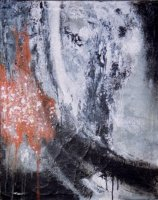
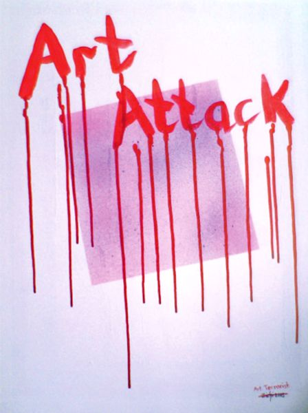

zichi Lorentz

Zichi Lorentz.
Visual Artist.Commentator-Publisher.
Liverpool UK (1952-1971).
London UK (1971-1994).
Japan (1994-).
Present location:Tatsuno City. Hyogo.
pdf Library for my Paintings and Exhibitions

My Abstract Painting — Influences and Ideas
My abstract painting is influenced by several different sources: the development of postwar Japanese art, traditional Japanese aesthetics, the use of color in Western abstraction, and my own interest in the relationship between the spiritual and the material worlds.
{kind=link}

Ikebana (click on image).
Japanese Postwar Abstract Art
Abstract art existed in Japan before the Second World War. However, after the war, Japan entered a period of enormous hardship, poverty, and mass hunger. Many Japanese people, particularly artists, rejected aspects of the traditional culture that they associated with the militarism and nationalism that had contributed to the destruction and suffering of the war.
At the same time, a new generation of artists began looking toward the future. Japanese artists became increasingly interested in international modernism and in finding new ways of expressing themselves.
An exhibition of Japanese postwar art at the University of Pittsburgh offered an interesting insight into this development. According to exhibition catalogue essayist Ming Tiampo, two major trends emerged in postwar Japan. The first was "Reportage" painting, which was based on realism and depicted the horrors of war and postwar society. The second sought to modernize traditional Japanese art and was represented by groups such as Genbi, a contemporary art discussion group that embraced abstraction, a forward-looking attitude, and interdisciplinary collaboration between painters, sculptors, calligraphers, and masters of flower arrangement.
{kind=link}

Ikebana (click on image).
Jiro Yoshihara and Gutai
One of the most important developments in Japanese postwar abstraction was the formation of the Gutai movement.
{kind=link}

In 1955, Jiro Yoshihara, an artist and successful industrialist who had been active in Genbi, founded Gutai, an avant-garde movement that eventually gained international recognition. Gutai publications were reportedly found in Jackson Pollock's studio after his death, and Western artists and cultural figures such as John Cage, Robert Rauschenberg, and Willem de Kooning became aware of the movement. Some also visited artists in Japan.
Gutai was concerned with reinventing painting rather than eliminating it. The artists experimented with the relationship between the artwork, nature, space, movement, time, and performance. A particular location or environment could become part of the artwork itself. They also actively used newspapers and other media to communicate their ideas to a wider audience.
The Gutai movement was an important bridge between Japanese traditions and international avant-garde art. It demonstrated that Japanese artists could engage with modernism without simply imitating Western art.
From Pittsburgh Post-Gazette | The Gutai Manifesto
{kind=link}

Art Attack. Acrylic on wood. (click on image).
Japanese Art and the West
After the Second World War, Japanese artists increasingly divided into two broad tendencies. Some worked in an international style, while others maintained connections with Japanese artistic traditions, often expressed through a modern visual language.
In the major cities, particularly Tokyo, painters, calligraphers, and printmakers responded to the rapidly changing urban environment. The flickering lights, neon colors, movement, noise, and frenetic pace of modern city life found their way into abstract art.
At the same time, the various "isms" of the New York and Paris art worlds were enthusiastically embraced in Japan. Abstraction, Pop Art, Op Art, and other international movements became important influences.
By the late 1970s, however, some Japanese artists began questioning what they perceived as the empty formulas of Western modernism. There was renewed interest in discovering distinctly Japanese qualities within contemporary art.
Artists began to reconsider traditional Japanese concepts of space, color, harmony, simplicity, and lyricism. Some artists associated with Mono-ha, for example, returned to painting in an attempt to rediscover traditional Japanese nuances within a modern context.
This tension between the international and the distinctly Japanese has continued to interest me.
Japanese Artists Abroad
For many young Japanese artists, studying art at university is now an important part of their development. However, establishing a successful career remains extremely difficult. Some artists therefore leave Japan and travel to major international art centres such as New York, London, and Paris.
One example is Ikeda Masuo (1934–1997), a Japanese printmaker who struggled to establish himself in Japan before moving to New York. His prints, often filled with eroticism, irony, and imagination, eventually brought him international recognition. In 1966, he won the Grand Prix for printmaking at the Venice Biennale.
After returning to Japan, Ikeda achieved considerable success. Today, the Masuo Ikeda Museum in Nagano houses his work. I visited the museum when I lived in Nagano. It opened around the time of his sudden death, and sadly, he never had the opportunity to visit it himself.
The Ikeda Masuo Art Museum in Matsushiro, Nagano, permanently closed on July 31, 2017.
My Relationship with Japanese Abstract Art
My own interest in Japanese abstract art is not simply to reproduce traditional Japanese imagery. Instead, I am interested in taking traditional Japanese concepts and allowing them to become starting points for my own abstract paintings.
Among these influences are **wabi-sabi**, Japanese flower arrangement or **ikebana**, and the traditional Japanese hanging scroll known as a **kakejiku**.
I am interested in what happens when an idea that originated within a traditional Japanese context is transformed into a contemporary abstract painting.
Dawn After Dark
My "Dawn After Dark" paintings are based on the idea of a "Third Reality."The inspiration came from the book "Dawn After Dark" by Daisaku Ikeda and its discussion of the relationship between spirituality, art, education, and the transformation of the individual.
Dawn After Dark. Daisaku Ikeda.
I was particularly interested in the dialogue between Ikeda and the French artist and curator Hervé Huyghe. Their discussion considers the social responsibilities of both religion and art, and the role of spirituality and education in confronting the egoism of the modern world—the tendency to sacrifice the interests of other people and future generations for our own needs.
The authors connect these issues with individual empowerment and self-transformation, and with the possibility of developing a practical vision of coexistence.
I read the entire book almost without putting it down, but one section particularly attracted me:
- Part Five: Artistic Creativity
- 1. The Spiritual Value of Art
- 2. Art in the Orient and in the Occident
This section explores the spiritual value of art and asks a fundamental question: what is art?
Conventionally, we think of two realities: **subjective reality** and **objective reality**. Subjective reality is associated with time, while objective reality is associated with space. We exist as human beings within both—we are time existing in space.
Our lives are experienced as time: subjective reality. The physical world around us exists as space: objective reality.
Ikeda and Huyghe propose the possibility of a **Third Reality**, existing between time and space. For me, this is where the artist enters.
The artist transforms time into space.
An experience, a thought, an emotion, or a moment in time can be transformed into something physical—a painting occupying space.
My "Dawn After Dark" paintings explore this idea of the Third Reality. They are painted primarily in black and white, using abstraction to explore the transformation of time, experience, and thought into visual space.
Simply Color
One of the strongest forces in painting is color. The psychological and emotional effects of color have been extensively explored, and color was one of the things that attracted me to painting in the first place.
When we are small children, it is often color that first draws us toward the paint box. Before we understand composition, perspective, or artistic theory, we respond instinctively to color.
In the 1950s, a major development in American abstract painting became known as "Color Field painting". It emphasized the expressive and lyrical possibilities of large areas of color.
The term initially referred to a particular direction within Abstract Expressionism, associated with artists such as Mark Rothko, Clyfford Still, Barnett Newman, Robert Motherwell, and Adolph Gottlieb. The critic Clement Greenberg saw Color Field painting as related to, but distinct from, Action painting.
During the early and mid-1960s, the term was increasingly applied to a younger generation of artists, including Kenneth Noland and Helen Frankenthaler, as well as artists such as Larry Zox and Frank Stella, who were taking abstraction in new directions.
Color Field painting represented a movement away from the gestures and dramatic brushwork associated with Abstract Expressionism. Recognizable imagery was largely eliminated, while color, space, surface, and the physical presence of the painting became the central subjects.
The movement was connected to a number of other developments in modern art, including Post-Painterly Abstraction, Suprematism, Hard-edge painting, and Lyrical Abstraction.
The painting itself became the subject.
In my "Simply Color" paintings, I explore my own emotional, psychological, and spiritual responses to color. I am interested not only in what color looks like, but also in what it makes us feel and think.
Wabi-Sabi
At the heart of "wabi-sabi" is a different way of looking at existence.
Wabi-sabi recognizes beauty in things that are imperfect, impermanent, and incomplete. It finds beauty in the modest, the humble, the rustic, the organic, and the unconventional.
It is both simple and complex, and its influence can be found throughout many aspects of Japanese life and culture.
For me, "wabi-sabi" is not simply an artistic style. It is a way of thinking about existence.
In much of Western culture, the individual has traditionally been placed at the centre of attention. In contrast, Japanese aesthetics often place greater emphasis on the relationship between the individual, nature, and the whole.
This difference can also be seen in the way space is understood.
In a traditional Japanese house, nature and the garden become part of the interior through sliding screens and open spaces. The boundary between inside and outside is therefore much less rigid than in many Western houses.
This creates a sense of balance and harmony.
The Japanese concept of "wa", meaning harmony, is particularly important. A traditional Japanese room may appear almost empty to a Western visitor because there may be very little furniture. But this apparent emptiness is not really empty. The space itself has a purpose. The relationship between the objects, the people, and the surrounding space creates harmony.
The same principle can be found in the traditional Japanese garden.
A Western garden may be designed to stimulate the senses and create visual excitement, whereas the traditional Japanese garden, particularly the Zen garden, can be designed to quiet the mind.
Wabi-sabi means "a beauty of the imperfect." This does not mean that Japanese people prefer a broken or damaged cup simply because it has a crack in it. Japanese crafts can be extraordinarily precise and technically perfect.
Rather, wabi-sabi suggests that even the most perfect human creation is ultimately imperfect when compared with the larger reality of nature and existence.
There are many interpretations of wabi-sabi, and much has been written about it. But ultimately, I believe that wabi-sabi cannot be fully understood through words alone.
It has to be experienced.
And perhaps this is also true of painting.
Wabi-sabi, like painting,
- cannot be seen completely.
- Cannot be written.
- Cannot be spoken.
- Cannot be heard.
It can only be experienced.